Azure Latch - Википедия меги123 про азур латч
Azure Latch - это игра про футбол созданная на основе аниме или манги блю лок в роблоксе Blue Lock.
Игровой процесс
В отличие от обычного футбола, здесь у каждого игрока есть уникальные стили игры и суперспособности. Игроки могут использовать дриблинг, подкаты,удары и могут войти в "поток" накопя 100% ульты так же в игре есть не только стили нападающих но и защитников так что кому что по душе может опробовать в этой игре .
Скриншот заставки игры
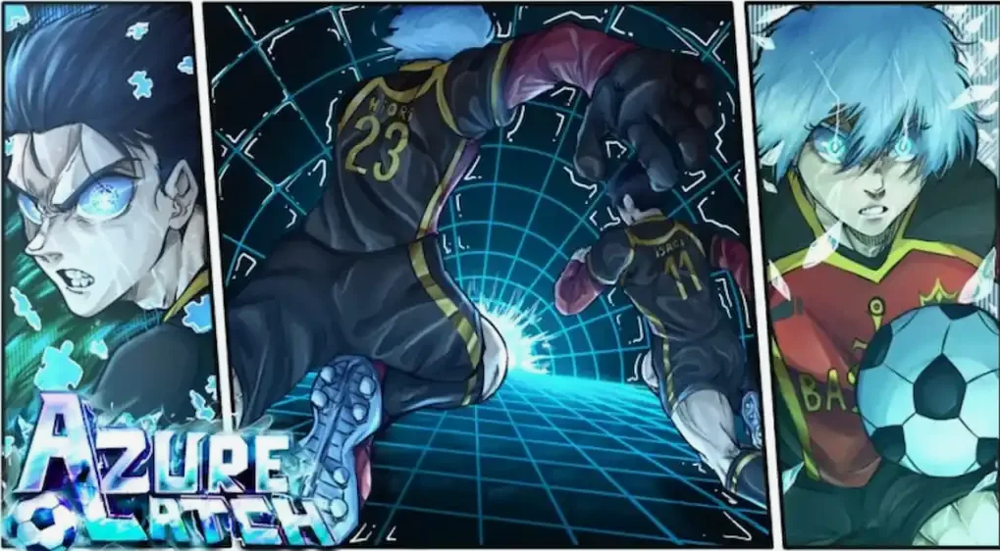
Стили
В игре есть множество стилей разной редкости. Вот самые известные:
- Kaiser (кайзер) - стиль, завязанный на мощные удары,забивание голов,движение без мяча, на дальние передачи.
- Rin (Рин) - интересный стиль, завязанный на крученных ударах в базе 1 а в ульте целых 3 вариаций,забивание голов,на агрессивном дриблинге и проходе толпы людей.
- Nel isagi (Нель исаги) - стиль, завязанный ударах с лету,защите ворот,движений без мяча,чтений поля .
Базовое управление на ПК
- M1 (лкм) - Обычный удар,можно закручивать на клавиши A и D так же заряжать силу удара
- Подкат (q) - нырок в чела с ног, при удачном подкате забирает мяч, а если противник нажмет дриббилнг то тебя застанит и ты упадешь
- Дриблиг (e) - обходка которая позвоялет не дать челу забрать мяч если он использует подкат
- Режим техники (без мяча на е либо включить авто технику в настройках) - дает использовать обычные удары с лету на лкм и хедеры для воздушного дриблинга
Описание,редкости,способности персонажей:
Редкость:common в данные стили входять исаги и гагамару
Исаги Иоичи
- - 1 скилл - направленный удар, обычный удар вперед, можно направлять камерой высоту, так же имеет способность ударять с лету, имеет iframe, перезарядка 20 секунд
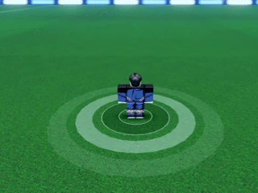
- - 2 скилл - Рывок нарухай, обычный рывок можно ипользовать с мячем так же имеет iframes, перезарядка 24 секунды.
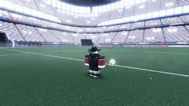
Cпособности потока
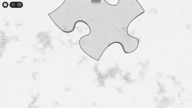
- - катсцена овертайм потока - нажать ульт в овертайме
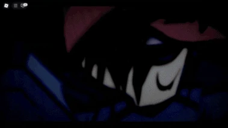
- - 3 скилл - Мой направленный удар, очень сильный удар имеет способности удара с лету или просто при наличий мяча, перезарядка 60 секунд
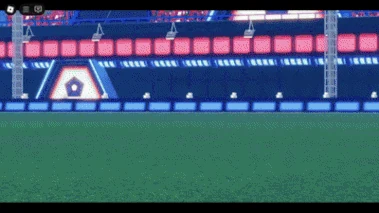
- - 4 скилл - Удар с рефлексов,так же очень сильный удар ,но есть условие чтоб твой напарник имел мяч в штрафной зоне и рядом с ним был соперник для удара и ты должен забрать мяч у напарника для активаций катсцены, перезарядка 25 секунд
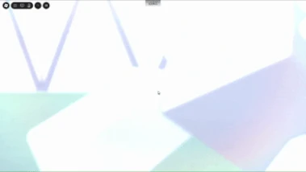
- - 5 скилл - Подвинься,забирает мяч у товарища, перезарядка 60 секунд
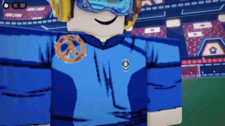
Особые вариаций катсцен/h2>
- - 1 скилл - Мой обратный задний удар пяткой,для выполения нужно чтобы соперник сделал в вас подкат во время вашей ульты когда вы применяете 1 скилл и тогда начнется катсцена при которой вы сделаете удар с силой так же как и мой направленный удар, перезярдка около 25 секунд
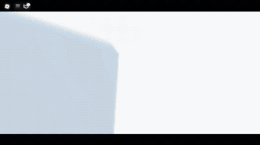
- - 4 скилл - Пасу мне баро,нужно использовать 4 скилл подвинься на игроке с персонажем баро
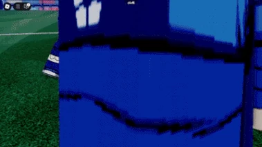
- - 3 скилл - Удар удачи,нужно использовать 3 скилл в овертайме ульте подойдя к пазлу удачи возле штрафной зоны
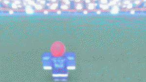
- - химическая реакций, нужно чтоб бачира нажал на вас 3 скилл а вы должны когда мяч находится в воздухе нажать 1 скилл и получится химическая реакция(не автогол)
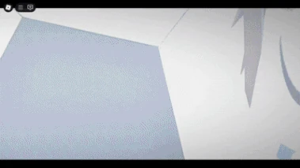